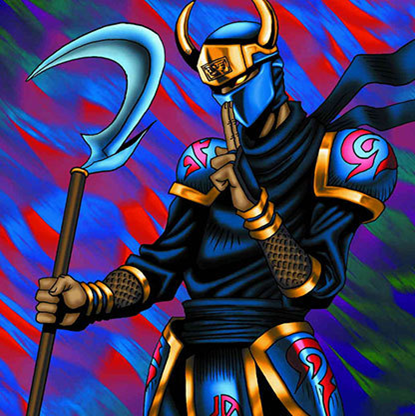

Armed Ninja

Description: "Able to move and attack without triggering an opponent's TRAP (LR)."
STATS
ATK: 300
DEF: 300DECK COST
Deck Cost per Card: 11EFFECT NOT IMPLEMENTED
Fusion List (55 Possible Fusions)
- Armed Ninja + Abyss Flower = Bean Soldier
- Armed Ninja + Ancient Jar = Minomushi Warrior
- Armed Ninja + Arlownay = Bean Soldier
- Armed Ninja + Armaill = Charubin the Fire Knight
- Armed Ninja + Blackland Fire Dragon = Sword Arm of Dragon
- Armed Ninja + Bladefly = Cockroach Knight
- Armed Ninja + Blocker = Cyber Soldier
- Armed Ninja + Blue-Eyed Silver Zombie = Zombie Warrior
- Armed Ninja + Bone Mouse = Zombie Warrior
- Armed Ninja + Brave Scizzar = Cyber Soldier
- Armed Ninja + Charubin the Fire Knight = Flame Swordsman
- Armed Ninja + Clown Zombie = Armored Zombie
- Armed Ninja + Corroding Shark = Zombie Warrior
- Armed Ninja + Crawling Dragon #2 = Sword Arm of Dragon
- Armed Ninja + Crawling Dragon = Sword Arm of Dragon
- Armed Ninja + Cyber-Stein = Cyber Soldier
- Armed Ninja + Cyber Commander = Cyber Soldier
- Armed Ninja + Dancing Elf = Celtic Guardian
- Armed Ninja + Dark Gray = Tiger Axe
- Armed Ninja + Dark Plant = Bean Soldier
- Armed Ninja + Dharma Cannon = Cyber Soldier
- Armed Ninja + Dragon Piper = Charubin the Fire Knight
- Armed Ninja + Dragon Statue = Dragoness the Wicked Knight
- Armed Ninja + Dragon Zombie = Sword Arm of Dragon
- Armed Ninja + Fiend's Hand = Zombie Warrior
- Armed Ninja + Fire Eye = Charubin the Fire Knight
- Armed Ninja + Fire Reaper = Zombie Warrior
- Armed Ninja + Flame Ghost = Zombie Warrior
- Armed Ninja + Flame Manipulator = Charubin the Fire Knight
- Armed Ninja + Fusionist = Tiger Axe
- Armed Ninja + Ganigumo = Cockroach Knight
- Armed Ninja + Griggle = Bean Soldier
- Armed Ninja + Jinzo #7 = Cyber Soldier
- Armed Ninja + Kattapillar = Cockroach Knight
- Armed Ninja + Korogashi = Cockroach Knight
- Armed Ninja + Koumori Dragon = Sword Arm of Dragon
- Armed Ninja + Man-Eater Bug = Cockroach Knight
- Armed Ninja + Man Eater = Bean Soldier
- Armed Ninja + Mavelus = Flame Swordsman
- Armed Ninja + Mechanical Spider = Cyber Soldier
- Armed Ninja + Milus Radiant = Tiger Axe
- Armed Ninja + One-Eyed Shield Dragon = Dragon Statue
- Armed Ninja + Phantom Ghost = Zombie Warrior
- Armed Ninja + Rainbow Flower = Bean Soldier
- Armed Ninja + Shadow Specter = Zombie Warrior
- Armed Ninja + Skull Servant = Zombie Warrior
- Armed Ninja + Tentacle Plant = Bean Soldier
- Armed Ninja + The 13th Grave = Armored Zombie
- Armed Ninja + The Wandering Doomed = Zombie Warrior
- Armed Ninja + White Dolphin = Wow Warrior
- Armed Ninja + Wicked Dragon with the Ersatz Head = Dragon Statue
- Armed Ninja + Wings of Wicked Flame = Flame Swordsman
- Armed Ninja + Wood Remains = Zombie Warrior
- Armed Ninja + Yamatano Dragon Scroll = Dragon Statue
- Armed Ninja + Zombie Warrior = Armored Zombie